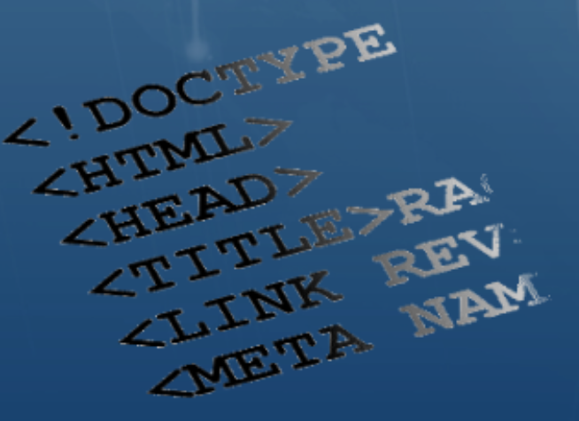

ვებ გვერდების აწყობის ანბანს წარმოადგენს ტექნოლოგია, რომელსაც HTML- ვუწუდებთ. HTML(Hyper Text Markup Language). ჰიპერტექსტების მარკირების ენა.
ტიმ ბერნერს-ლიმ შექმნა ვებ გვერდების შექმნის სტრუქტურა, რომლის საშუალებითაც დღეს-დღეობით შესაძლებელია ვებ რესურსების მოხმარება. ტიმ ბერნერს-ლიმ საფუძველი დაუდო HTML ჰიპერტექსტური მარკირების ენას.
HTML არ წარმოადგენს დაპროგრამების ენას, მისი საშუალებით უბრალოდ ხორციელდება ვებ გვერდის სტრუქტურის აწყობა და მისი დიზაინის შემუშავება. HTML არის მეტად მარტივი და ასათვისებლად იოლი ტექნოლოგია. იგი წარმოადგენს ვებ გვერდის ძირითად ბირთვს. იმისათვის რომ შევძლოთ HTML ტექნოლოგიის შესწავლა, არ არის აუცილებელი რაიმე პროგრამისტისათვის საჭირო უნარების ფლობა.